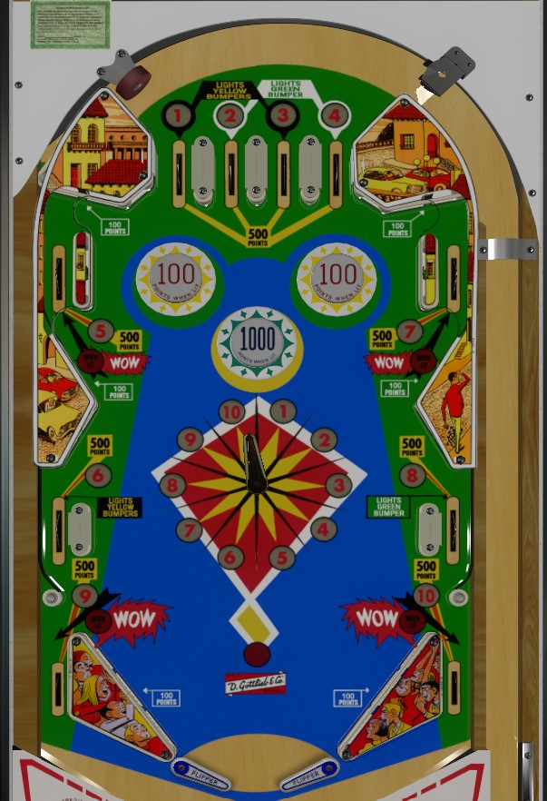

Road Race is the replay version. Stock Car is the add-a-ball version. Both are 1 player only.
Collect the 10 numbers from around the playfield by making their rollover lanes or pushing the pointer flipper toward lit numbers. When all 10 have been collected, the out lanes and certain specific numbers will be lit for specials (on Road Race) or extra balls (on Stock Car). On Road Race, specials are lit for the rest of the game; on Stock Car, extra balls are only available for one ball in play, and number progress will reset when the current ball drains.
The below picture is of Stock Car, which was taken from the VPX recreation by Loserman76.
The numbers 1 through 10 can be collected in two ways: the rollover lanes spread around the table, and the movable pointer flipper in the center of the table. For rollover lanes, 1-2-3-4 are top lanes, 5 and 7 are upper side lanes, 6 and 8 are middle side lanes, and 9 and 10 are out lanes. For the center pointer flipper, whenever the pointer is pushed into a new wedge, you'll get credit for collecting the corresponding number. Collect a lit number to unlight it.
On Road Race, lit numbers score 200 points, and unlit/already collected numbers score 50 points. Collecting all 10 numbers activates Special Mode for the rest of the game. In Special Mode, one number and one out lane will be lit seemingly randomly, changing on various 1 point switch hits. Collecting the lit number from its lane or the center pointer, or going through the lit out lane, scores a free game. Special Mode lasts for the entire rest of the game.
On Stock Car, all numbers score 500 points, whether lit or not. Collecting all 10 numbers activates Wow Mode, but only for the rest of the current ball in play. Both upper side lanes, both out lanes, and two random numbers will be lit for Wow. Make any lane or number lit for Wow to collect an extra ball. Collect as many extra balls as you can before the ball drains- you can have up to 10 balls remaining at any one time. When the ball in play drains while Wow Mode is on, all Wows will unlight and all numbers reset for the next ball.
Road Race's center dial has the numbers 1-10 in a jumbled order, while Stock Car's center dial has the numbers in sequence 1-10 going clockwise. You may score the 50 or 500 points multiple times even though the dial only moved by one wedge, especially if the pointer is close to the line between two wedges- I've seen the points trigger as many as three consecutive times.
The two upper yellow bumpers score 1 point or 10 points when lit, and the lower green bumper scores 10 points or 100 when lit. (Stock Car multiplies these values by 10.) Either the yellow or the green bumpers will be on at any one time, but never both. The 1, 3, and 6 rollover lanes light the yellow bumpers, while the 2, 4, and 8 rollover lanes light the green bumper.
There are no in lanes. Two-inch "mini" flippers are used. The flippers back up directly to the slingshots. Slingshots score 10 points on Road Race and 100 points on Stock Car. The left and right out lanes award the 9 and 10 in the 1-10 sequence respectively, and their scoring is as defined above in the 1-10 section.
There is no end of ball bonus. Tilt ends game on Road Race; on Stock Car, tilt penalty is the ball in play plus one additional ball. There is no way to set specials or Wows to be worth points as far as I am aware.